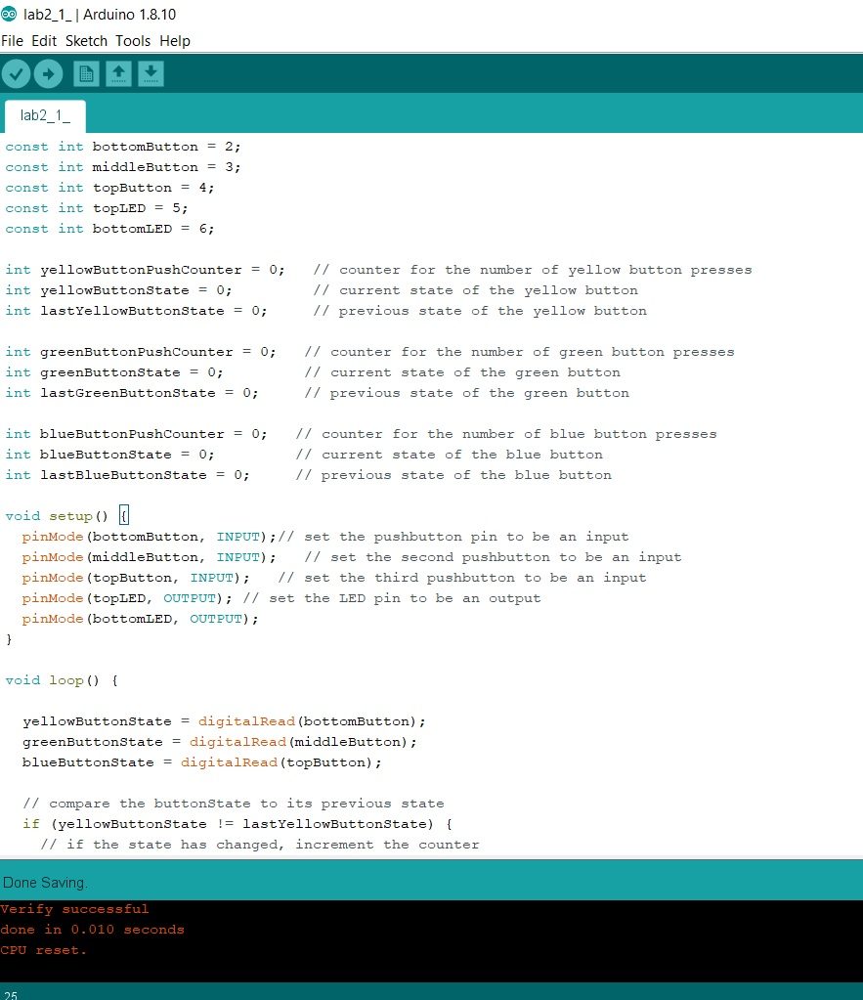
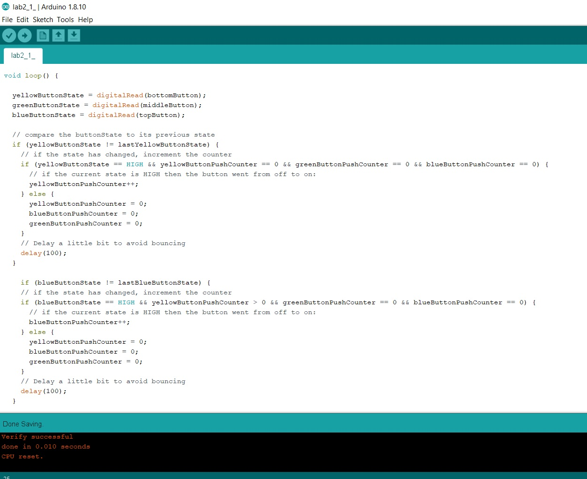
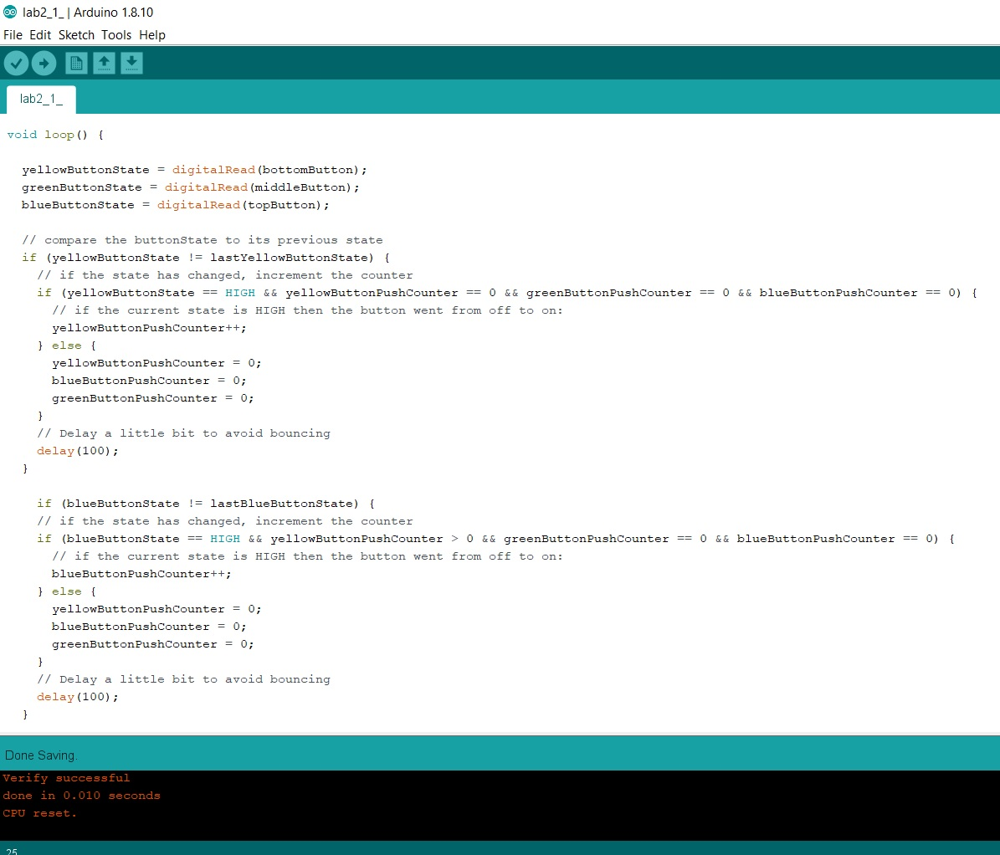

This week's class was all about digital input and output -- turning things on and sending signals through our microcontrollers. At the end of the lab, it suggests a practical application of this: a combination lock. Okay, I thought. How about I make a combination lock with some LEDs and buttons. Should be easy enough.
How very wrong I was.
My setup was three buttons wired to my microcontroller as inputs on pins D2, D3, and D4. Two LEDs were wired as outputs on pins D5 and D6. The idea is that one LED, D6, is lit up by default, and when the correct button press combination is entered D6 LED shuts off and the D5 LED lights up.
My assumption was that if I used a series of nested if statements in the Arduino code, I could accomplish this switch easily. So I wrote something along the lines of "if bottom button is pressed, then if top button is pressed, then if middle button is pressed, turn D6 off and turn D5 on". This spectacularly failed to work. The bottom LED did turn off and the top did turn on, but ONLY when all three buttons were held down, and the order didn't matter at all. In effect, I'd made a switch that switched when three buttons were pressed at the same time, which I definitely didn't want.
So, I started some troubleshooting. I identified two problems. One was the speed. Arduino was running at something like 60 loops per second, so it's no surprise the light was switching instantaneously. Even if there was some single moment of delay between the input not being entered correctly and the input being entered correctly, human eyes wouldn't perceive it. Also, the if statements were structured in a way that, at some point during these incredibly fast loops, they were all going to be true. Holding the buttons was the only way to keep registering the push, because my simple script didn't remember state.
So I decided I needed a state machine.
Helpfully, I found this code snippet on the Arduino website, which seemed like a useful basis for my own state machine. It had a way of saving button presses in state from loop to loop, which was exactly what I needed. I rewrote it to keep three buttons in state, and I used the buttonPressCounter variable to keep track of whether each button had been pushed or not (so it was either zero or one). If a button was pushed out of sequence, the button state was supposed to go back to zero. I also increased the delay to 100, just to make doubly sure there was no bounceback.
This... kind of worked. It registered the correct button order, but the thing is the sequence wasn't resetting when the wrong button was pressed, so that even if you pressed yellow then blue then blue then blue then blue THEN green it'd still light up. This wasn't ideal for a combination lock, since anyone would eventually just stumble onto the correct order.
So I did a little bit of tinkering. I'd been resetting buttonState when the incorrect order was entered, but instead I tried resetting buttonPushCounter. My reasoning here was that if we reset the pushCounter instead of the state we'll never get an inccorect combination triggering the light, since the pushCounter at this point was referenced in every if statement.
This also kind of worked, but a bit better this time. The LED DID only turn on when the correct order was pressed, but all three buttons had to be held at the same time, and the light turned off once they were released. I suspect it had something to do with the way state was redefined at the beginning of each loop, but at this point (since it was past midnight) I declared my combination lock a temporary win. Check back in a few days when I've gotten the chance to debug this further, and we may have a 100% foolproof lock -- that is, foolproof to anyone who can't guess a three-button combination.
Code is posted below (open the image separately to get a better view).
  Seeing the blog post I immediately thought of the LinkNYC stations that have been set up all over the city. I've honestly always loved these things for a few reasons: they have cute art a lot of the time, which makes people look up from their phones. They have free calls and free charging, which I thought was super helpful for homeless people (the homeless problem in NYC is horrible right now), and they give you free WiFi, so what's not to like? I loitered around a couple near 23rd street and saw some people walking by look up at them, I'd hazard ~10%, and there were a few people (judging by looks homeless but you shouldn't judge) who were using the control interface.
Well, then my friend told me to check out the Wikipedia page, and my naive worldview was shattered. Apparently these things collect a ton of information about people, which is especially troubling since many of the people who use these systems are among the most vulnerable members of our society. Also, I have to say that while the LinkNYC kiosks have some very cute art and quotes, they're also home to some of the most noxious ads I dislike. Times Square is one thing, but having to be bombarded with flashing ads while I'm literally just trying to walk down the sidewalk feels like a black mirror episode.
I think that more than any particular interaction, the entire experience taught me to not take technology at face value. Anything can SEEM good, and in fact every company takes great steps to make it seem like their products are good or necessary or otherwise beneficial. But these days, I tend to take the opposite tack, assuming that everything I'm presented with is designed to take advantage of me in some way or to use me to make a profit. It's a truly exhausting mindset, and maybe why so many people in NYC are so cranky.
Comments? Questions? Concerns? Email me here!